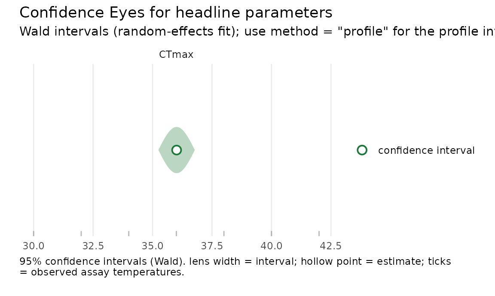

Random effects: hierarchical thermal tolerance
Source:vignettes/random-effects.Rmd
random-effects.RmdThis vignette is for a thermal biologist whose survival assays are
grouped — colonies, clutches, populations, tanks,
broods — and who wants to model between-group variation without spending
a fixed coefficient on every group. That is exactly what a
random intercept does: it treats the per-group
deviations as draws from a Gaussian, estimates a single between-group
standard deviation, and shrinks each group’s estimate
toward the overall mean (partial pooling). In freqTLS a
random intercept is available on the thermal-tolerance midpoint
CTmax, the thermal-sensitivity log_z, and the
shape coordinates low and log_k.
Fixed groups vs. a random intercept
With a handful of well-sampled groups you can give each its own
fixed CTmax (CTmax ~ group,
see vignette("freqTLS")). With many groups — or groups you
regard as a sample from a population — a random
intercept CTmax ~ 1 + (1 | group) is the better
tool: it costs one variance parameter instead of one coefficient per
group, and the group estimates borrow strength from each other. The
deviations b_g ~ N(0, sigma_CTmax^2) are integrated out by
TMB’s Laplace approximation; sigma_CTmax is
estimated by marginal maximum likelihood. A formula without
(1 | group) uses the ordinary fixed-effects objective.
Adding (1 | group) is not a no-op: it adds and integrates a
group-level Gaussian block, even when its fitted variance is near
zero.
A random intercept on CTmax
We simulate 14 colonies whose CTmax varies with a between-colony SD of 1.5 °C, then fit a single random intercept.
set.seed(1)
d <- simulate_tls(family = "binomial", CTmax = 36, z = 4,
re_sd = 1.5, n_re_groups = 14, seed = 1)
fit <- fit_tls(
tls_bf(survived | trials(total) ~ time(duration) + temp(temp),
CTmax ~ 1 + (1 | colony)),
data = d, family = "binomial", tref = 1, quiet = TRUE)
# The estimates table carries the population CTmax / z and the between-colony SD.
est <- fit$estimates
est[est$parameter %in% c("CTmax", "z", "sigma_CTmax"),
c("parameter", "estimate", "std.error")]
#> parameter estimate std.error
#> 4 CTmax 36.010947 0.38977872
#> 5 z 3.952015 0.05042902
#> 6 sigma_CTmax 1.454802 0.27579903sigma_CTmax is the estimated between-colony standard
deviation of CTmax, in °C — directly interpretable on the
thermal-tolerance scale. It is a maximum-likelihood variance component,
so it is biased low when there are few groups: it is
essentially unbiased by ~14 groups but increasingly shrunk toward zero
below that. A focused recovery study makes the bias concrete and shows
the fixed-effect CTmax interval losing coverage in step —
the empirical basis for the advisory fit_tls() emits below
~8 groups. Repository maintainers can regenerate it with the source-only
data-raw/re-recovery-study.R script, which is not
installed:
| n groups | mean sigma_CTmax | rel. bias | CTmax 95% coverage |
|---|---|---|---|
| 3 | 1.044 | -0.304 | 0.733 |
| 5 | 1.199 | -0.200 | 0.853 |
| 8 | 1.352 | -0.099 | 0.893 |
| 14 | 1.430 | -0.047 | 0.933 |
| 30 | 1.448 | -0.035 | 0.920 |
So with only a handful of groups the reported
sigma_CTmax understates the true spread and the
CTmax interval is optimistic. Prefer
confint(method = "bootstrap") (or bayesTLS)
for the fixed effects, and describe the variance component as likely
downward-biased rather than treating it as a precise estimate or a
literal confidence bound.
The conditional modes (BLUPs) — each colony’s shrunken deviation from
the population CTmax — come from ranef():
head(ranef(fit), 4)
#> # A tibble: 4 × 4
#> group term estimate std.error
#> <chr> <chr> <dbl> <dbl>
#> 1 g1 CTmax -0.906 0.396
#> 2 g10 CTmax -0.505 0.396
#> 3 g11 CTmax 2.16 0.396
#> 4 g12 CTmax 0.603 0.396Prediction distinguishes the population curve from an observed
colony’s conditional curve. Population predictions set the random
intercept to zero; conditional predictions add the fitted BLUP and
require the grouping column in newdata:
colony_1 <- as.character(ranef(fit)$group[1])
new_colony <- data.frame(temp = 36, duration = 2, colony = colony_1)
data.frame(
target = c("population", "colony"),
survival = c(
predict(fit, new_colony, re.form = "population"),
predict(fit, new_colony, re.form = "conditional")
)
)
#> target survival
#> 1 population 0.19888224
#> 2 colony 0.08525094Calling predict() without re.form on a
random-effects fit warns and returns the population prediction. An
unseen group cannot receive an estimated BLUP, so conditional prediction
stops and points to re.form = "population".
confint() routes uncertainty by target. It gives a
positive, log-scale Wald interval for sigma_CTmax. It
profiles the population CTmax under the random effect,
re-running the Laplace approximation at each grid point, so this is
slower than a fixed-effects profile. If that fixed-effect profile does
not close, the default fallback is Wald; request
method = "bootstrap" to redraw the random effects and refit
the full model instead.
suppressMessages(confint(fit, "sigma_CTmax", method = "wald"))[
, c("parameter", "conf.low", "conf.high")]
#> # A tibble: 1 × 3
#> parameter conf.low conf.high
#> <chr> <dbl> <dbl>
#> 1 sigma_CTmax 1.00 2.11
suppressMessages(confint(fit, "CTmax", method = "profile", npoints = 8))[
, c("parameter", "conf.low", "conf.high", "method")]
#> # A tibble: 1 × 4
#> parameter conf.low conf.high method
#> <chr> <dbl> <dbl> <chr>
#> 1 CTmax 35.2 36.8 profileThe Confidence Eye always uses Wald intervals for a random-effects
fit, even when method = "profile" is requested, because a
profile eye would re-run the Laplace approximation at every grid point
for every row. Use confint(fit, method = "profile") for
fixed-effect profiles or confint(fit, method = "bootstrap")
for random-effects-aware bootstrap intervals. The eye remains a
confidence-interval display, never a posterior.
suppressMessages(plot_confidence_eye(fit, parm = "CTmax"))
Random effects on sensitivity and curve shape
The same (1 | group) syntax works on log_z
(thermal sensitivity) and on the shape coordinates low (the
lower, long-exposure asymptote) and log_k (the steepness).
One nuance matters: because z, low, and
k are modelled on transformed scales, their variance
components live on those scales — sigma_logz is a SD on
log(z), sigma_low on logit(low),
sigma_logk on log(k). Read
sigma_logz as an approximate multiplicative spread
on z: exp(sigma_logz) is the fold-change
across groups, not a z-unit SD.
set.seed(2)
dz <- simulate_tls(family = "binomial", CTmax = 36, z = 4,
re_sd_z = 0.3, n_re_groups = 14, seed = 2)
fit_z <- fit_tls(
tls_bf(survived | trials(total) ~ time(duration) + temp(temp),
log_z ~ 1 + (1 | colony)),
data = dz, family = "binomial", tref = 1, quiet = TRUE)
sg <- fit_z$estimates$estimate[fit_z$estimates$parameter == "sigma_logz"]
c(sigma_logz = round(sg, 3),
approx_fold_spread_in_z = round(exp(sg), 3))
#> sigma_logz approx_fold_spread_in_z
#> 0.265 1.303The upper asymptote up is the one shape with no
random effect: under the disjoint-bounds parameterisation
up = up_min + up_w * plogis(beta_up) it has its own
coordinate beta_up, but the compiled objective carries no
random-intercept term for up (and its profile path is not
wired either — the same gap that leaves up with a
delta-method interval). Put the random intercept on low or
log_k instead.
Combining random effects, and what is out of scope
You can place random intercepts on more than one coordinate. When two
or more share the same grouping factor,
freqTLS fits them as independent variances
(all cross-correlations forced to zero) and warns:
set.seed(3)
db <- simulate_tls(family = "binomial", CTmax = 36, z = 4,
re_sd = 1.2, re_sd_z = 0.3, n_re_groups = 14, seed = 3)
# Both random intercepts on the same `colony` grouping. This fits, but emits a
# warning that the two variances are independent (no correlation term); we pass
# `quiet = TRUE` to silence it here and discuss it below.
fit_both <- fit_tls(
tls_bf(survived | trials(total) ~ time(duration) + temp(temp),
CTmax ~ 1 + (1 | colony), log_z ~ 1 + (1 | colony)),
data = db, family = "binomial", tref = 1, quiet = TRUE)
fit_both$estimates$parameter[grepl("^sigma", fit_both$estimates$parameter)]
#> [1] "sigma_CTmax" "sigma_logz"In real data the group-level CTmax and z
deviations are usually correlated; by forcing that correlation to zero,
the independent-variance fit absorbs it into the marginal SDs and the
fixed-effect intervals. If you need a correlated random
effect — or crossed/nested grouping factors, or a random slope
— use bayesTLS,
whose Stan back end fits the full covariance. freqTLS
deliberately stops at independent random intercepts on
CTmax / log_z / low /
log_k.
The likelihood view of shrinkage
A Gaussian random effect is a distributional model for the latent
group deviations, not a prior placed on the reported population
parameters. Its conditional modes (BLUPs) have an empirical-Bayes
interpretation and shrink toward zero. The fixed effects and variance
components are estimated by marginal maximum likelihood, and their
intervals are profile-likelihood intervals for fixed-effect coordinates,
log-scale Wald intervals for variance components, or
parametric-bootstrap intervals when explicitly requested; they are not
credible intervals. That is the same complementary stance the rest of
freqTLS takes toward bayesTLS (see
vignette("frequentist-and-bayesian")): the random effect
buys you partial pooling without committing to priors on the parameters
you report.